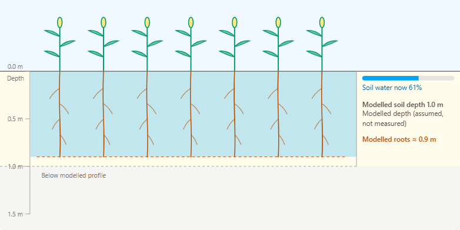
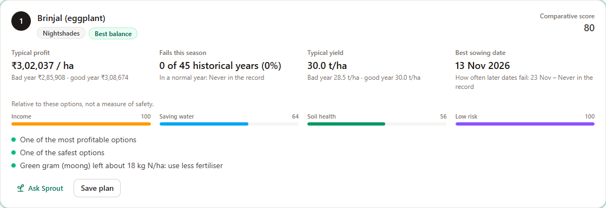
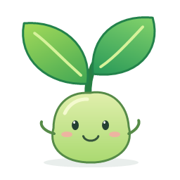

Crop-planning decision support
CropCompass
What should I plant next?
NASA weather. Soil context. Crop history. Your priorities.

Explore choices across income, water, soil and risk.
One field. Competing priorities.
A crop choice is a trade-off.
A promising crop is not necessarily the right crop for this field, this water supply, or this rotation.
01 / INCOME
Can it pay?
Consider indicative costs and outcomes in a poor season.
02 / WATER
Can it finish?
Rainfall timing and irrigation change the result.
03 / SOIL
What carries over?
Roots, residue and previous crops matter.
04 / RISK
What can go wrong?
Look beyond a rank to historical failures and assumptions.
Turn scattered Earth data into a comparison that includes the farmer's own context.
Different sources. Explicit roles.
From Earth data to crop options.
NASA POWER
1981+
Daily weather for historical climate and crop-water trials.
MODIS NDVI
250 m
16-day greenness history; suggests season timing, not crop identity.
SoilGrids
6 depths
Mapped soil properties; known farmer values can override them.
Farmer journal
Your field
Crop dates, residue, irrigation context and priorities.
Annual checkpoints and source labels
FAO-style water/yield + succession rules
Historical distributions, not forecasts
Explore before committing
Make the assumptions visible.
Try me
Preview a crop without creating a journal entry or saving a plan.
Know the source
The 1 m profile is a modelling assumption, not detected bedrock.
Keep context intact
Seasonal crop fit and advice from today's modelled water are labelled separately.
The farmer can correct known soil values. The model should never hide an assumption as a measurement.
Make the trade-off explicit
Compare outcomes. Then save a plan.

Read absolute risk
Failures and yield ranges accompany the ranking.
Choose what matters
Income, water, soil and risk weights express preferences.
Think beyond one season
Explore rotations and retain assumptions in saved plans.
Designed to explain, not overpromise
Useful without hiding uncertainty.
Traceable evidence
Separate source status, dates and confidence. Suspect weather stays quarantined; any historical-reference fallback is disclosed.
Verified ingestion is not field validation.
Models compute. Sprout explains.
The deterministic engine produces crop results. Sprout explains selected evidence, with consent and usage limits.
AI answers can be wrong or unavailable.

Start with a better-informed choice
Better questions. Clearer trade-offs.
For farmers and advisers: connect Earth data with the field's history and the farmer's priorities.
Next: calibrate with local field observations, evaluate with farmers, and expand region packs responsibly.
Data and methods
NASA POWER; MODIS MOD13Q1 V061 via ORNL DAAC REST; ISRIC SoilGrids; OpenStreetMap contributors (ODbL). FAO-56/33, Saxton & Rawls, RothC-style methods.
AI and software attribution
Development/documentation: GitHub Copilot. Runtime explanations: Groq-hosted model (source default: openai/gpt-oss-120b). React, FastAPI and other open-source libraries; full references and license inventory in SPACE_APPS_SUBMISSION.md.